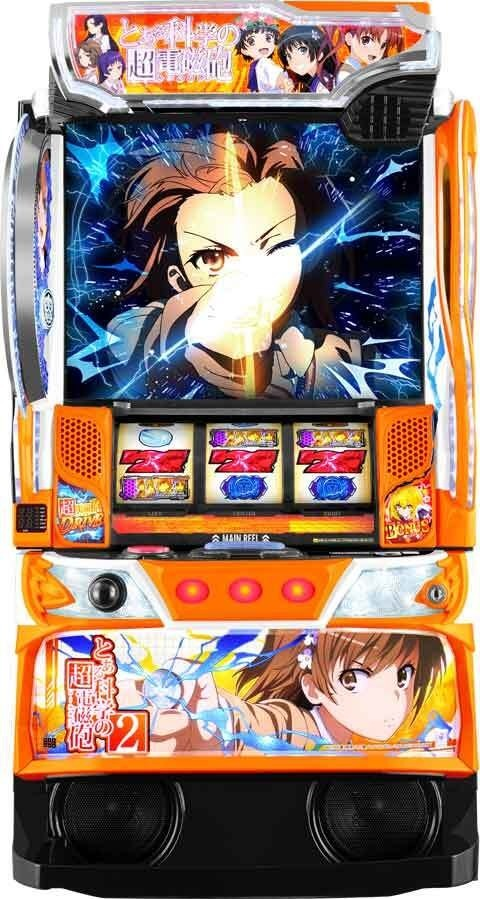
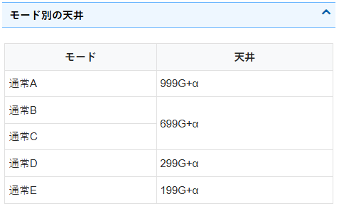
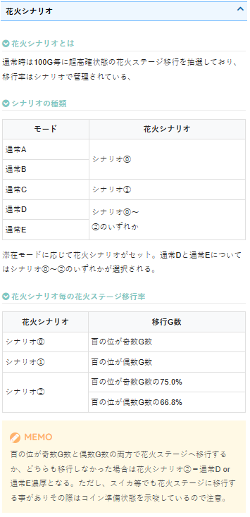
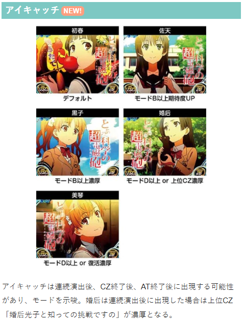
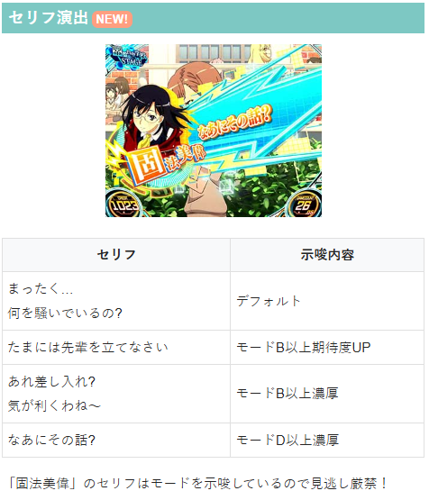

とある科学の超電磁砲2

【天井情報】
最大999G+α AT当選
通常時は最大999G＋αで天井到達。天井後のコイン揃いでATに当選。天井ゲーム数はモードによって異なる。
設定変更時は天井が最大699Gに短縮される。
【リセット判別】
設定変更時は内部G数ランダム加算あり。
ガックン無し
【有利区間について】
不明
狙い目
【リセット狙い】
天井狙い
260Gから
ゾーン狙い
100Gゾーン 狙えない
※また、設定変更時に内部加算ゲーム数があるため少しずれたところで規定ゲーム数に到達する事がありそう
【ゲーム数天井狙い】
620Gから
【ゾーン狙い】
100Gゾーン
60Gから
300Gゾーン
250Gから
500Gゾーン
410Gから
※花火ステージ移行を期待して打つため、規定ゲーム数到達後に数ゲーム回して花火ステージに移行しなかった場合はやめ？念のため5Gくらい回すのが無難そう。
※規定ゲーム数から花火ステージ移行時は、基本的に下二桁00Gでゲーム数表示が青→02Gで花火ステージとなる。
※ゾーン当選分布は下二桁20-50Gに集中している
【示唆関連の押し引きについて】
通常D以上濃厚ならAT当選まで
通常C以上濃厚は200GからAT当選まで
通常B以上濃厚は300GくらいからAT当選まで？
アイキャッチ
「黒子」 通常B以上濃厚
「婚后」 通常D濃厚 or 上位CZ
「美琴」 通常D or 復活濃厚
セリフ
「あれ差し入れ？～」 通常B以上濃厚
「なあにその話？」 通常D以上濃厚
花火シナリオ
シナリオ2が確認出来れば通常D以上？
シナリオ0を否定すれば通常C以上のため、100の位が奇数で花火ステージ移行無ければAT当選まで？？
【有利区間関連狙い】
差枚+1500枚以上 100ゾーン 40Gから
差枚+1700枚以上 100ゾーン 0Gから
やめ時
AT後は特に続行すべき示唆や差枚が無ければ1G回してアイキャッチ確認してやめ
その他




参考元
基本情報
- メーカー: 藤商事
- 機械割: 97.7% 〜 112.9%
- 導入開始日: 2025年11月04日（火）
- ゲーム性概要: ●通常時は超電磁砲コインを揃えてCZを抽選 ●CZクリアでATへ突入 ●ATは純増約2.6枚/Gのゲーム数管理型 ●超電磁砲コイン・レア役・ゲーム数消化での上乗せやボーナス抽選あり ●ボーナス当選時は上位AT突入のチャンス!? ●上位ATは純増約4.0枚/Gのセット管理型で継続率は90%超 ●上位AT終了時はボーナスを経由してATへ復帰 ●上乗せしたゲーム数はすべて消化できる「NO Loss GAMEシステム」搭載 ※コンプリート機能搭載機


打ち方
打ち方・小役
打ち方（小役狙い）
「最初に狙う絵柄」 左リールに青BARを狙う。上段にスイカが止まった時以外、中・右リールはフリー打ちでOKだ。
「スイカ停止時」 中・右リールの両方にスイカを狙う。いずれも白7を目安に目押ししよう。
「レア役の停止例」 レア役に強弱はナシ。左リールにチェリーが止まっても、超電磁砲コインが揃った場合は超電磁砲コインとして抽選される。 チェリーは6枚だが、取りこぼした場合は3枚。
「超電磁砲コインの1・2確目」 順押しで消化時、上記の出目が止まれば超電磁砲コイン2確。中1stナビ時に止まった場合は1確となる。 ハサミ打ちで赤7or白7を狙い、下段にコインがテンパイした場合は超電磁砲コインの2確だ。
変則押しはNG
通常時、押し順ナビなし時は左リール第1停止での消化を推奨する。
解析情報通常時
小役関連
通常時・実質小役確率（超電磁砲コイン除く）
| 役 | 確率 |
|---|---|
| ハズレ目（押し順ベルこぼし含む） | 1/1.60 |
| リプレイ | 1/7.60 |
| ナビリプレイ | 1/182.04 |
| ベル | 1/5.94 |
| ナビベル | 1/28.25 |
| チェリー | 1/43.52 |
| スイカ | 1/99.90 |
※超電磁砲コイン除くレア役合算確率は1/30.31
超電磁砲コインは内部的に1枚役とリプレイの2種類があり、状態によって出現率（ナビの発生率）が変化する。1枚ベルとリプレイフラグは、GIRLS JUDGE中などの狙えカットインの際は右1stナビが出てBARが停止するフラグでもある。
リプレイ・1枚役の詳細確率
| 役 | 確率 |
|---|---|
| リプレイ1 | 1/13.80 |
| リプレイ2 | 1/41.48 |
| リプレイ3 | 1/41.48 |
| リプレイ4 | 1/546.13 |
| リプレイ5 | 1/546.13 |
| リプレイ6 | 1/546.13 |
| リプレイ7 | 1/185.13 |
| リプレイ8 | 1/185.13 |
| 1枚役1 | 1/17.16 |
| 1枚役2 | 1/17.16 |
| 1枚役3 | 1/38.55 |
| 1枚役4 | 1/38.55 |
| 1枚役5 | 1/655.36 |
| 1枚役6 | 1/655.36 |
| 1枚役7 | 1/152.41 |
| 1枚役8 | 1/152.41 |
| 1枚役9 | 1/126.03 |
| 1枚役10 | 1/126.03 |
| 1枚役11 | 1/297.89 |
| 1枚役12～14 | 1/297.89 |
| 1枚役15 | 1/1024.00 |
リプレイ・1枚役の1st停止位置ごとの出目
| 役 | 左1st時の出目 | 中1st時の出目 | 右1st時の出目 |
|---|---|---|---|
| リプレイ1 | リプレイ | コインor リプレイ | 右1個 |
| リプレイ2 | リプレイ | コインor リプレイ | 中右2個 |
| リプレイ3 | リプレイ | コインor リプレイ | 左右2個 |
| リプレイ4 | 上段コイン | コインor リプレイ | 右1個 |
| リプレイ5 | 上段コイン | コインor リプレイ | 中右2個 |
| リプレイ6 | 上段コイン | コインor リプレイ | 左右2個 |
| リプレイ7 | リプレイ | コインor リプレイ | コインor リプレイ |
| リプレイ8 | リプレイ | コインor リプレイ | コインor リプレイ |
| 1枚役1 | ベル | コインor ベル | 左1個 |
| 1枚役2 | ベル | コインor ベル | 中1個 |
| 1枚役3 | ベル | コインor ベル | 左中2個 |
| 1枚役4 | ベル | コインor ベル | 3個 |
| 1枚役5 | 右下がりコイン | コインor ベル | 左1個 |
| 1枚役6 | 右下がりコイン | コインor ベル | 中1個 |
| 1枚役7 | スイカコイン | コインor ベル | 左1個 |
| 1枚役8 | スイカコイン | コインor ベル | 中1個 |
| 1枚役9 | チェリーコイン | コインor ベル | 左1個 |
| 1枚役10 | チェリーコイン | コインor ベル | 中1個 |
| 1枚役11 | リーチ目 | コインor ベル | BAR揃い |
| 1枚役12～14 | ハズレ目 | ハズレ目 | 7揃い |
| 1枚役15 | ハズレ目 | ハズレ目 | BAR非停止 |
※スイカコイン…左リールスイカ停止からのコイン揃い ※チェリーコイン…左リールチェリー停止からのコイン揃い ※1枚役12～14は狙えカットイン時に7揃いするフラグ。下段：右下がり：中段の3フラグがあり、比率は45.4%：27.3%：27.3% ※右1st時の項目は狙えカットイン時のBARor7の停止位置＆停止個数
狙えカットイン時のトータルBAR停止確率＆停止割合
| 役 | 確率 | 割合 |
|---|---|---|
| 1個停止 | 1/4.49 | 66.67% |
| 2個停止 | 1/12.85 | 23.27% |
| 3個停止 | 1/38.55 | 7.76% |
| BAR揃い | 1/297.89 | 1.00% |
| 7揃い | 1/297.89 | 1.00% |
| BAR非停止 | 1/1024.00 | 0.29% |
狙えカットイン時のBAR停止位置ごとの詳細確率
| 役 | 確率 |
|---|---|
| 左1個 | 1/13.46 |
| 中1個 | 1/13.46 |
| 右1個 | 1/13.46 |
| 左中2個 | 1/38.55 |
| 左右2個 | 1/38.55 |
| 中右2個 | 1/38.55 |
| 3個 | 1/38.55 |
| BAR揃い | 1/297.89 |
| 7揃い | 1/297.89 |
| BAR非停止 | 1/1024.00 |
約33％でBARが2個以上が止まるので、GIRLS JUDGEでのBATTLE OF RAILGUN以上期待度は約33%以上（チャンスリールがある場合はこれよりも期待度が高くなる）。
超電磁砲コインの出現抽選
［超電磁砲コインがゲームの軸］ 通常時〜AT中まですべての状態で重要となるのが超電磁砲コインで、通常時はCZ当選の、AT中はゲーム数上乗せのメイン契機。 滞在ステージ（内部状態）によって出現確率が異なり、レア役契機で出現する可能性もある（レア役契機の場合はレア役成立後に「コイン準備」という前兆を経由して超電磁砲コインが出現）。
高確中
| 設定 | 直コイン揃い | コイン準備経由 | トータル |
|---|---|---|---|
| 1 | 1/61.61 | 1/57.29 | 1/29.69 |
| 2 | 1/61.61 | 1/57.29 | 1/29.69 |
| 3 | 1/61.61 | 1/57.29 | 1/29.69 |
| 4 | 1/61.61 | 1/57.29 | 1/29.69 |
| 5 | 1/61.61 | 1/57.29 | 1/29.69 |
| 6 | 1/61.61 | 1/57.29 | 1/29.69 |
花火ステージ中
| 設定 | 直コイン揃い | コイン準備経由 | トータル |
|---|---|---|---|
| 1 | ー | 1/2.99 | 1/2.99 |
| 2 | ー | 1/2.99 | 1/2.99 |
| 3 | ー | 1/2.99 | 1/2.99 |
| 4 | ー | 1/2.99 | 1/2.99 |
| 5 | ー | 1/2.99 | 1/2.99 |
| 6 | ー | 1/2.99 | 1/2.99 |
リプレイ・1枚役成立時の超電磁砲コインへの変換当選率
| 役 | 通常or高確準備中 | 高確中 |
|---|---|---|
| リプレイ1～3 5～10以外の1枚役 | 0.4% | 0.4% |
| リプレイ4～6 1枚役5～10 | 7.8% | 40.2% |
コイン準備を経由せず、リプレイや1枚役成立時に直接超電磁砲コインへ変換する抽選値。 花火ステージ中は1枚役やリプレイ契機で超電磁砲コイン揃いに当選した場合でも、コイン準備を経由して超電磁砲コインが出現する。
コイン準備当選率 通常or高確準備中
| 設定 | リプレイ4～6 1枚役5～10 | チェリー | スイカ | |
|---|---|---|---|---|
| 1 | ー | 0.78% | 25.00% | |
| 2 | ー | 0.78% | 25.00% | |
| 3 | ー | 1.17% | 25.78% | |
| 4 | ー | 1.56% | 28.52% | |
| 5 | ー | 1.56% | 29.30% | |
| 6 | ー | 1.95% | 30.08% | |
| 設定 | リプレイ7～8 | リプレイ1～3 5～10以外の1枚役 | ||
| 1 | ー | ー | ||
| 2 | ー | ー | ||
| 3 | ー | ー | ||
| 4 | ー | ー | ||
| 5 | ー | ー | ||
| 6 | ー | ー |
高確中
| 設定 | リプレイ4～6 1枚役5～10 | チェリー | スイカ | |
|---|---|---|---|---|
| 1 | 3.13% | 40.23% | 75.00% | |
| 2 | 3.13% | 40.23% | 75.00% | |
| 3 | 3.13% | 40.23% | 75.00% | |
| 4 | 3.13% | 40.23% | 75.00% | |
| 5 | 3.13% | 40.23% | 75.00% | |
| 6 | 3.13% | 40.23% | 75.00% | |
| 設定 | リプレイ7～8 | リプレイ1～3 5～10以外の1枚役 | ||
| 1 | ー | ー | ||
| 2 | ー | ー | ||
| 3 | ー | ー | ||
| 4 | ー | ー | ||
| 5 | ー | ー | ||
| 6 | ー | ー |
花火ステージ中
| 設定 | リプレイ4～6 1枚役5～10 | チェリー | スイカ | |
|---|---|---|---|---|
| 1 | 100% | 100% | 100% | |
| 2 | 100% | 100% | 100% | |
| 3 | 100% | 100% | 100% | |
| 4 | 100% | 100% | 100% | |
| 5 | 100% | 100% | 100% | |
| 6 | 100% | 100% | 100% | |
| 設定 | リプレイ7～8 | リプレイ1～3 5～10以外の1枚役 | ||
| 1 | 100% | 75.00% | ||
| 2 | 100% | 75.00% | ||
| 3 | 100% | 75.00% | ||
| 4 | 100% | 75.00% | ||
| 5 | 100% | 75.00% | ||
| 6 | 100% | 75.00% |
※リプレイ7～8と1枚役は中押しナビが発生
コイン準備への移行対象となる小役の合算確率
| 役 | 確率 |
|---|---|
| リプレイ4～6 1枚役5～10 | 1/26.64 |
| チェリー | 1/43.52 |
| スイカ | 1/99.90 |
| リプレイ7～8 | 1/92.56 |
| リプレイ1～3 5～10以外の1枚役 | 1/3.37 |
内部状態関連
内部状態概要
| 種類 | 通常・高確準備・高確の3種類＋花火ステージ |
|---|---|
| 状態で変化する要素 | 超電磁砲コインの出現（ナビ発生）確率 |
| おもな昇格契機 | スイカ・チェリー・押し順ナビ時の抽選 花火ステージは100G消化ごとに移行の可能性あり |
通常時の内部状態は通常・高確準備・高確の3種類あり、おもに小役を契機に移行。小役での移行とは別に、100Gごとに移行が抽選される花火ステージは、小役契機の高確よりも超電磁砲コイン確率が高い。
リプレイ4～6・1枚役7～10（押し順ナビ発生）
高確準備・高確移行時は20Gの保障ゲーム数を獲得。20G消化後のハズレ時に転落を抽選する。
保障ゲーム数消化後の転落率
| 契機 | 転落率 |
|---|---|
| ハズレ | 50.00% |
| 1Gあたりの実質転落率 | 31.31% |
AT終了後の高確移行率
AT終了後は高確移行を抽選。AT終了後、レア役なしで超電磁砲コインが停止したら高確にいた可能性が高い。
モード
モードごとの天井ゲーム数
| モード | 天井 |
|---|---|
| 通常A | 999G＋α |
| 通常B | 699G＋α |
| 通常C | 699G＋α |
| 通常D | 299G＋α |
| 通常E | 199G＋α |
モードごとの花火シナリオ
| モード | シナリオ |
|---|---|
| 通常A | シナリオ0 |
| 通常B | シナリオ0 |
| 通常C | シナリオ1 |
| 通常D | シナリオ0～2のいずれか |
| 通常E | シナリオ0～2のいずれか |
滞在モードに応じて、花火ステージ（高確）への移行ゲーム数が変化。通常DとEはシナリオ0〜2のすべてが選択される可能性がある。
シナリオごとの花火ステージ移行ゲーム数
| シナリオ | ゲーム数 |
|---|---|
| シナリオ0 | 百の位が奇数ゲーム数で移行 |
| シナリオ1 | 百の位が偶数ゲーム数で移行 |
| シナリオ2 | 百の位が奇数ゲーム数の75.0%、 百の位が偶数ゲーム数の66.8%で移行 |
百の位が奇数のゲーム数と偶数のゲーム数の両方で花火ステージへ移行、もしくは両方とも花火ステージへ移行しなければシナリオ2濃厚（通常DorE濃厚）となる。
通常CorDorE滞在時
| 設定 | 99G | 199G | 299G | 399G | 499G |
|---|---|---|---|---|---|
| 1 | 25.00% | 6.25% | 68.75% | ー | ー |
| 2 | 25.00% | 6.25% | 68.75% | ー | ー |
| 3 | 25.00% | 6.25% | 68.75% | ー | ー |
| 4 | 25.00% | 6.25% | 68.75% | ー | ー |
| 5 | 25.00% | 6.25% | 68.75% | ー | ー |
| 6 | 25.00% | 6.25% | 68.75% | ー | ー |
ゲーム数消化でもCZに当選する可能性があり、当選率は滞在モードによって変化。自力でCZに当選した場合もCZ天井はクリアされないため、299Gや499G付近は狙い目だ。 通常Eは199GがATの天井なので、99Gの振り分けは通常C・Dと同じだが、199Gや299GでのCZ抽選はない。
CZ
GIRLS JUDGE
CZ当選時はまずGIRLS JUDGEに移行し、狙えカットイン発生時のBARが止まった個数に応じて発展先が変化。 左・中・右リールのいずれか、もしくは複数がチャンスリールになる可能性があり、 チャンスリールにBARが止まった場合は2個停止 として扱われる。
GIRLS JUDGE性能
| 突入契機 | CZ当選時 |
|---|---|
| 規定ゲーム数 | 狙えカットイン発生まで |
| BAR1個停止時 | MUSIC CHANCEへ |
| BAR2個or3個停止時 | BATTLE OF RAILGUNへ |
| BAR4個以上停止時 | AT直行 |
| BAR揃い時 | AT直行 |
| 7揃い時 | 超電磁砲BONUS＋AT |
| 狙え発生時にBAR非停止時 | ロングフリーズ |
※チャンスリールに止まったBARは2個分でカウント
「チャンスリール」 上画像の場合は左リールがチャンスリールなので、左リールにBARが止まれば2個停止扱い。
GIRLS JUDGE開始時・チャンスリール当選率
| 対応リール | 当選率 |
|---|---|
| ナシ（非当選） | 66.80% |
| 1箇所 | 28.13% |
| 2箇所 | 4.69% |
| 3箇所 | 0.39% |
1箇所と2箇所当選時は左・中・右リールのそれぞれが均等の割合で選択される。
狙えカットイン発生まで・チャンスリール加算当選率
| 役 | 当選率 |
|---|---|
| ハズレ | 0.39% |
| 右押しリプレイ | 10.16% |
| チェリー | 10.16% |
| スイカ | 20.31% |
加算当選時は、左リールから順に空いているリールをチャンスリールに書き換え。すべてのリールがチャンスリールになった後に書き換えに当選した場合は、BATTLE OF RAILGUNの内部ダメージを1ずつ抽選する（見た目では判別不可）。
「狙えカットイン」
カットインの種類で複数停止の期待度が変化する。
MUSIC CHANCE
10G間全役でAT抽選がおこなわれ、歌が流ればAT当選となる。
MUSIC CHANCE性能
| 突入契機 | GIRLS JUDGEでBAR1個停止時 |
|---|---|
| 規定ゲーム数 | 10G |
| 消化中の抽選 | 全役でAT抽選 |
| 成功期待度 | 約32% |
AT当選率
| 役など | 当選率 |
|---|---|
| ナビなしリプレイ | 12.50% |
| 中押しリプレイ | 50.00% |
| ナビなしベル | 0.39% |
| 中押しベル | 2.34% |
| チェリー | 31.25% |
| スイカ | 50.00% |
| 最終ゲーム（役不問） | 0.39% |
MUSIC CHANCE中のナビベルとナビリプレイ成立時は中押しナビ（中押しリプレイ）が出現。 最終ゲームは追加で成立役不問の専用抽選もおこなわれ、 0.39% でATに当選する。
AT当選濃厚となる特殊パターン
オールハズレ（1枚ベルも揃わない）
リール演出が4回以上発生 （リール演出3回＋最終ゲームでリプレイやレア役成立時も有効）
「リール演出」 小役成立後はリール演出が発生し、最終的に歌が流れるとAT濃厚。ショート＜ミドルの2パターンが存在する。
BATTLE OF RAILGUN
狙えカットインが3回＋α発生し、停止したBARの合計数に応じて勝利期待度が変化（当否はラストのジャッジ演出で告知）。 レア役成立時は狙えカットインの回数加算を抽選する。
BATTLE OF RAILGUN性能
| 突入契機 | GIRLS JUDGEでBAR2or3個停止時 |
|---|---|
| 規定ゲーム数 | 狙えカットインが3回＋α発生するまで （レア役で狙え回数加算抽選あり） |
| 消化中の抽選 | BARの合計停止個数に応じてAT期待度が変化 ラストジャッジ中のレア役は勝利濃厚 |
| VS麦野沈利 | 勝利期待度：約55.25% |
| VS清ヶ太郎丸 | 勝利期待度：約80.33% |
| 上条当麻出現 | エピソードボーナス濃厚 |
BAR揃い時はAT濃厚。 7揃い時や上条当麻出現時は、FINAL PHASEを経由してエピソードボーナスに当選する。
狙えカットイン回数加算当選率
| 役 | 当選率 |
|---|---|
| 右押しリプレイ | 25.00% |
| チェリー | 25.00% |
| スイカ | 50.00% |
当選時は狙えカットイン回数が＋される。
「勝利抽選」 狙えカットイン発生時にBARが1個止まるごとに、1ダメージを加算。3回＋αの狙えカットインで各対戦相手に設定されたHP量を減らすことができれば勝利濃厚となる。
対戦相手のHP振り分け
| HP | 麦野沈利 | 清ヶ太郎丸 |
|---|---|---|
| 上条当麻出現 | 0.39% | 1.56% |
| 3 | 7.81% | 40.23% |
| 4 | 35.94% | 43.36% |
| 5 | 36.72% | 14.84% |
| 6 | 19.14% | ー |
狙えカットインは最低3回発生するので、HP3が選ばれればその時点で勝利濃厚。キャラの違いはHPの振り分けの違いのみとなっている。
その他法則
BAR揃いはAT濃厚＋4ダメージ加算
BARが1個も止まらなければロングフリーズ濃厚
7揃い・上条当麻出現でFINAL PHASE（エピソードBONUS）へ
ラストジャッジでのチェリーとスイカ成立は勝利濃厚 （HPが6の場合、＋1ダメージ扱い）
HP6を超えた分は1ダメージにつきATのゲーム数が＋10G
勝利時の約25%で復活演出が発生 （BAR揃いなどの勝利濃厚パターン時を除く）
［ラストジャッジ］
婚后光子と知っての挑戦ですの（上位CZ）
突入した時点でAT以上濃厚となる上位CZ。成功期待度は約50%で、成功時はエピソードボーナスに突入する（フリーズ発生で成功）。 高設定ほど突入しやすいのも特徴だ。
エピソードボーナス当選率
| 役 | 当選率 |
|---|---|
| ハズレ | 0.39% |
| ナビなしリプレイ | 12.50% |
| 中押しリプレイ | 100% |
| ナビなしベル | 2.73% |
| 中押しベル | 12.50% |
| チェリー | 100% |
| スイカ | 100% |
エピソードボーナス当選時は当選ゲームで必ず告知（フリーズ）が発生する。 小役での抽選のほかに、消化中に一度も小役が揃わなかった場合も成功濃厚だ。
エピソードボーナス当選時のフリーズタイミング振り分け
| タイミング | ハズレ | ナビなしリプレイ | 中押しリプレイ |
|---|---|---|---|
| レバーON後 | 1.56% | 3.13% | ー |
| 第1停止後 | 32.81% | 3.13% | 12.50% |
| 第2停止後 | 32.81% | 6.25% | 37.50% |
| 第3停止後 | 32.81% | 87.50% | 50.00% |
| タイミング | ナビなしベル | 中押しベル | チェリーorスイカ |
| レバーON後 | 12.50% | ー | ー |
| 第1停止後 | 50.00% | 12.50% | 87.50% |
| 第2停止後 | 25.00% | 75.00% | ー |
| 第3停止後 | 12.50% | 12.50% | 12.50% |
CZ・AT当選率
コイン準備経由時のトータルCZ当選期待度
コイン準備を経由して超電磁砲コインが揃った場合、コイン準備移行時と準備中のコイン揃い時という2回のCZ抽選を受けることができる（複数ストックはナシ）。
コイン準備中・コインが揃う状態までのゲーム数振り分け
| 前兆ゲーム数 | 振り分け |
|---|---|
| 7G | 3.13% |
| 8G | 6.25% |
| 9G | 90.63% |
コイン準備中にはコインが揃うようになるまでの前兆ゲーム数があって、前兆ゲーム数を消化すると、1枚役orリプレイ成立時に超電磁砲コイン揃いのナビが出る状態へ移行する。
超電磁砲コイン揃い後の前兆ゲーム数振り分け
| 前兆 | フェイク | CZ | 上位CZ | AT | EPB |
|---|---|---|---|---|---|
| 3G | ー | 0.39% | ー | 1.56% | ー |
| 4G | 70.31% | 25.00% | ー | 12.50% | 33.20% |
| 5G | ー | 0.39% | 3.13% | 1.56% | 33.20% |
| 6G | ー | 0.39% | 3.13% | 6.25% | 33.59% |
| 7G | ー | ー | 3.13% | 1.56% | ー |
| 8G | ー | 4.69% | 12.50% | 25.00% | ー |
| 9G | 19.92% | 29.69% | 32.81% | 25.00% | ー |
| 10G | 9.77% | 39.45% | 32.81% | 25.00% | ー |
| 11G | ー | ー | 12.50% | 1.56% | ー |
※CZ…GIRLS JUDGE、上位CZ…婚后光子と知っての挑戦ですの、EPB…エピソードBONUS
フェイク前兆は4Gがもっとも選ばれやすいので、前兆が5Gを超えればCZ以上の期待度がアップする。
直撃抽選
エピソードボーナス直撃確率
高設定ほど、超電磁砲コイン揃いからのエピソードボーナス直撃に当選しやすい。
フリーズ
ロングフリーズ動画
通常時の中段チェリーやCZ中などの狙え→BAR非停止時にロングフリーズが発生。最強特化ゾーンのPHASE NEXTを経由して、ATに突入する。
解析情報ボーナス時
超電磁砲DRIVE（AT）
AT概要
ゲーム数管理型のAT。レア役による上乗せや特化ゾーンでゲーム数を上乗せしつつ、ゲーム数消化でのボーナス当選を目指すゲーム性で、おもにボーナス3回目から上位AT昇格の可能性がある。
AT性能
| 突入契機 | おもにCZ成功時 |
|---|---|
| 継続ゲーム数 | 50G＋α |
| 1Gあたりの純増 | 約2.6枚 |
| レア役成立時の抽選 | ステージ昇格、ゲーム数上乗せ、 特化ゾーン、おねだりミッション抽選 |
| ゲーム数消化の抽選 | ボーナス抽選 |
「超電磁砲コインは上乗せ濃厚」 通常時と同様、滞在ステージによって超電磁砲コインの出現確率が変化。超電磁砲コイン成立時は上乗せ濃厚かつ、約1/3でJUDGE LIGHT ATTACK（特化ゾーン）に当選する。 超電磁砲コイン契機の上乗せは基本的に＋10Gだが、＋20Gの場合はJUDGE LIGHT ATTACK当選濃厚だ。
AT中の規定ゲーム数
| ボーナス回数 | 規定ゲーム数 |
|---|---|
| 初回 | 最大199G＋α |
| 2回目以降 | 最大399G＋α |
実質超電磁砲コイン出現確率
| ステージ | 直コイン揃い | コイン準備経由 | トータル |
|---|---|---|---|
| 駆動鎧 | 1/246.05 | 1/372.86 | 1/148.23 |
| ドッペルゲンガー | 1/66.83 | 1/52.64 | 1/29.45 |
| BUNNY DANCE | 1/15.06 | 1/30.31 | 1/10.06 |
| 超BUNNY DANCE | 1/3.77 | 1/30.31 | 1/3.35 |
通常時と同様に、1枚役とリプレイは滞在ステージ（内部状態）に応じて超電磁砲コインへの変換当選率が変化。 レア役契機で超電磁砲コインに当選した場合もコイン準備を経由して揃う。
リプレイ・1枚役成立時の超電磁砲コインへの変換当選率
| 役 | 駆動鎧 | ドッペル ゲンガー | BUNNY DANCE | 超BUNNY DANCE |
|---|---|---|---|---|
| リプレイ1～3 7～10以外の1枚役 | 0.4% | 1.2% | 6.3% | 75.0% |
| リプレイ4～6 1枚役7～10 | 7.0% | 26.6% | 100% | 100% |
| リプレイ7～8 | 2.7% | 14.8% | 100% | 100% |
レア役のコイン準備当選率
| 役 | 駆動鎧 | ドッペル ゲンガー | BUNNY DANCE | 超BUNNY DANCE |
|---|---|---|---|---|
| チェリー | 0.78% | 50.00% | 100% | 100% |
| スイカ | 25.00% | 75.00% | 100% | 100% |
基本的に上表の抽選値になるが、各種前兆中（当選ゲームを含む）とコイン準備中はコイン準備移行抽選自体がおこなわれない（前兆中やコイン準備中にコイン準備に当選することはない）代わりに、内部状態の保障ゲーム数減算や転落抽選もおこなわれない。
内部状態昇格率
| 役 | 駆動鎧 →ドッペルゲンガー | ドッペルゲンガー →BUNNY DANCE |
|---|---|---|
| チェリー | 33.20% | 16.80% |
| スイカ | 3.13% | 3.13% |
| リプレイ4～6 1枚役7～10 | 2.73% | ー |
超電磁砲コイン抽選に漏れた場合（コイン準備移行含む）に、内部状態の昇格を抽選。昇格時は20Gの保障ゲーム数消化後、押し順ベルで転落が抽選される。 1枚役7〜10は判別できないので、レア役以外でも押し順ナビの一部で昇格すると考えておこう。
20G消化後・押し順ベルでの転落率
| 役 | 転落率 |
|---|---|
| 押し順ベル | 75.00% |
※1Gあたりの実質転落率は46.96%
※内部状態とステージは完全リンクではない
ゲーム数上乗せ当選率
| 役 | 当選率 |
|---|---|
| チェリー | 16.80% |
| スイカ | 1.95% |
上乗せゲーム数振り分け
| 上乗せ | チェリー | スイカ |
|---|---|---|
| ＋10G | 90.70% | ー |
| ＋30G | 4.65% | ー |
| ＋50G | 2.33% | 60.00% |
| ＋100G | 2.33% | 40.00% |
スイカは当選率こそ低いが、上乗せ時は＋50G or 100G濃厚。 ゲーム数上乗せ抽選は各種前兆中やコイン準備滞在中もおこなわれる。
AT初回のボーナス規定ゲーム数振り分け
| ゲーム数 | 振り分け |
|---|---|
| 50G以内 | 18.5% |
| 100G以内 | 78.4% |
| 199G＋α | 3.1% |
AT中は規定ゲーム数を消化するとボーナスに当選。初回は199G＋αが天井で、18.5%で50G以内が選ばれる。
特殊JUDGE LIGHT ATTACKモード性能
| 移行契機 | チェリー・スイカ成立時の抽選 |
|---|---|
| 継続ゲーム数 | 20G＋α |
| 滞在中の恩恵 | 超電磁砲コイン揃いで JUDGE LIGHT ATTACK突入濃厚 |
| 備考 | 屍喰部隊モード滞在中なら屍喰部隊ATTACKに、 ITEMモード滞在中ならITEM ATTACKに突入 |
屍喰部隊ATTACKやITEM ATTACK当選に関わる内部的なモード。 レア役成立時に移行が抽選され、滞在中に超電磁砲コインが揃えば滞在モードに対応したJUDGE LIGHT ATTACKに当選する。
特殊JUDGE LIGHT ATTACKモード当選率
| 役 | 屍喰部隊モード | ITEMモード | トータル |
|---|---|---|---|
| チェリー | 3.91% | 1.17% | 5.08% |
| スイカ | ー | 0.39% | 0.39% |
屍喰部隊ステージは特殊JUDGE LIGHT ATTACKモード滞在を示唆するモードで、ドッペルゲンガー以上のステージ滞在かつ、特殊JUDGE LIGHT ATTACKモードに滞在している場合に移行する可能性あり。
特殊JUDGE LIGHT ATTACKモード移行抽選は各種前兆中やコイン準備滞在中にもおこなわれ、屍喰部隊ATTACK前兆中にITEMモードに昇格した場合はITEM ATTACKに書き換えられる。
AT開始時のステージ振り分け
高設定ほどドッペルゲンガー以上が選ばれやすい。
JUDGE LIGHT ATTACK
JUDGE LIGHT ATTACK概要
おもに超電磁砲コイン揃いで突入するゲーム数上乗せ特化ゾーン。狙えカットインが1回発生するまで継続して、狙えカットイン発生時は BARが止まるごとに上乗せを獲得 する。通常時のGIRLS JUDGEと同様にチャンスリールが設定される可能性があり、チャンスリールにBARが止まった場合は分割上乗せが発生。 「屍喰部隊ATTACK」や「ITEM ATTACK」といった上位版も存在する。
JUDGE LIGHT ATTACK性能
| 突入契機 | 超電磁砲コイン揃い時の約1/3、 PRIVATE MODE中の抽選 |
|---|---|
| 継続ゲーム数 | 狙えカットイン1回発生まで |
| 消化中の抽選 | BARの停止個数や停止位置に応じた上乗せ抽選 BAR1個につき、最低20G上乗せ |
| BAR揃い時 | 特殊上乗せ発生 |
| 7揃い時 | 上乗せ＋超電磁砲BONUS |
| 狙え→BAR非停止時 | ロングフリーズ |
「屍喰部隊ATTACK」 1箇所以上がチャンスリールとなり、チャンスリールにBARが止まれば100G以上の上乗せ濃厚。
「ITEM ATTACK」 全リールがチャンスリールとなり、BAR停止ごとの上乗せゲーム数が最低70Gにアップ。 屍喰部隊ATTACKとITEM ATTACKともに、BAR揃い・7揃い・BAR非停止時は通常のJUDGE LIGHT ATTACKと同じ恩恵を受けられる。
初当りJUDGE LIGHT ATTACKの上乗せゲーム数
| パターン | 平均上乗せ | 最大上乗せ |
|---|---|---|
| 通常 | 40.13G | 350G |
| 屍喰部隊ATTACK | 80.75G | 500G |
| ITEM ATTACK | 105.94G | 410G |
チャンスリールの振り分け（初当り時）
| チャンスリール | 通常 | 屍喰部隊ATTACK | ITEM ATTACK |
|---|---|---|---|
| ナシ | 32.81% | ー | ー |
| 1箇所 | 46.88% | 96.09% | ー |
| 2箇所 | 18.75% | 3.52% | ー |
| 3箇所 | 1.56% | 0.39% | 100% |
1箇所・2箇所が選ばれた場合、どのリールがチャンスリールになるかはそれぞれ均等の割合で振り分けられる。
BAR停止個数ごとの上乗せゲーム数振り分け
| 上乗せ | 1個停止 | 2個停止 | 3個停止 | BAR揃い |
|---|---|---|---|---|
| ＋20G | 93.75% | ー | ー | ー |
| ＋30G | 5.47% | ー | ー | ー |
| ＋40G | ー | 93.75% | ー | ー |
| ＋50G | 0.39% | 4.69% | ー | ー |
| ＋70G | ー | 0.78% | 93.75% | ー |
| ＋100G | 0.39% | 0.39% | 5.86% | ー |
| ＋150G | ー | ー | ー | 98.44% |
| ＋200G | ー | 0.39% | 0.39% | 1.56% |
下段7揃い時は2個停止の振り分け、右下がりor中段揃い時は3個停止の振り分けでゲーム数が上乗せされる。 チャンスリールにBARが止まった場合は合計上乗せゲーム数を分割してみせるパターンがあるため、上表と異なるゲーム数が表示されるケースあり。
チャンスリールにBAR停止時の追加上乗せゲーム数振り分け
| 上乗せ | 通常 | 屍喰部隊ATTACK | ITEM ATTACK |
|---|---|---|---|
| ＋20G | 93.75% | ー | ー |
| ＋30G | 5.08% | ー | ー |
| ＋40G | 0.78% | ー | ー |
| ＋50G | 0.39% | ー | 87.50% |
| ＋70G | ー | ー | 12.50% |
| ＋100G | ー | 100% | ー |
チャンスリールの増加当選率
| 役 | 当選率 |
|---|---|
| 右押しリプレイ | 12.50% |
| ベル | 0.78% |
| チェリー | 12.50% |
| スイカ | 25.00% |
JUDGE LIGHT ATTACK中は成立役に応じてチャンスリールの増加を抽選。すでに3箇所ともチャンスリールの場合と屍喰部隊ATTACKやITEM ATTACKの場合は上乗せ＋10Gを獲得する。
PRIVATE MODE
PRIVATE MODE概要
JUDGE LIGHT ATTACK終了時の一部で突入する、JUDGE LIGHT ATTACKのループ特化ゾーン。 7G以内にJUDGE LIGHT ATTACKを引き戻せれば、JUDGE LIGHT ATTACK終了後に再度PRIVATE MODEへ突入する。引き戻し期待度は3種類あり、最高80%でループする。
PRIVATE MODE性能
| 突入契機 | JUDGE LIGHT ATTACK当選時の一部 |
|---|---|
| 継続ゲーム数 | 7G |
| 消化中の抽選 | JUDGE LIGHT ATTACKの引き戻し抽選、 継続に漏れた場合はレア役での書き換えを抽選 |
| 継続率 | 33or50or80% |
「背景ヒロインは変更可能」 左右キーで描き下ろしのヒロイン背景を選択可能。基本的には御坂美琴と食蜂操祈の2人なのだが、心理定規を選択できるようになっていると、高継続率の期待度がアップする。
［食蜂操祈］
［心理定規］
レア役でのJUDGE LIGHT ATTACK当選率
| 役 | 当選率 |
|---|---|
| チェリー | 12.50% |
| スイカ | 33.20% |
継続率に漏れていた場合、消化中のレア役でJUDGE LIGHT ATTACKの引き戻しを抽選。 JUDGE LIGHT ATTACKだけでなく、ゲーム数上乗せやおねだりミッションなど、通常の抽選もおこなわれる。
JUDGE LIGHT ATTACK告知時の フリーズタイミング振り分け
| タイミング | 押し順ベル | ナビなしリプレイ | 中押しリプレイ |
|---|---|---|---|
| レバーON後 | 1.56% | 3.13% | ー |
| 第1停止後 | 32.81% | 3.13% | 12.50% |
| 第2停止後 | 32.81% | 6.25% | 37.50% |
| 第3停止後 | 32.81% | 87.50% | 50.00% |
| タイミング | ナビなしベル | 中押しベル | チェリーorスイカ |
| レバーON後 | 12.50% | ー | ー |
| 第1停止後 | 50.00% | 12.50% | 87.50% |
| 第2停止後 | 25.00% | 75.00% | ー |
| 第3停止後 | 12.50% | 12.50% | 12.50% |
おねだりミッション＆真剣抽選T
おねだりミッション
AT中のスイカを契機に突入。規定ゲーム数以内にリプレイorレア役を引けば成功となり、真剣抽選Tへ移行する。
おねだりミッション性能
| 突入契機 | スイカでの抽選 |
|---|---|
| 消化中の抽選 | 規定ゲーム数以内に リプレイorレア役を引けば真剣抽選Tへ |
| 成功期待度 | 約50% |
おねだりミッションの継続ゲーム数振り分け
| ゲーム数 | 振り分け |
|---|---|
| 3G | 60.94% |
| 4G | 19.53% |
| 5G | 19.53% |
おねだりミッション本前兆中のプレミアミッション当選率
| 役 | 当選率 |
|---|---|
| チェリー | 3.13% |
| スイカ | 20.31% |
「プレミアミッション」 基本的には規定ゲーム数以内にリプレイorレア役を引けば成功。プレミアミッションは成功濃厚のミッションで、おねだりミッション当選時の抽選や本前兆中の書き換えにより出現する可能性がある。 プレミアミッションは上記以外にも複数のパターンが存在（金文字がプレミアミッション）。
真剣抽選T概要
1Gごとに報酬パネルがスライドしていき、リプレイを引いたパネルの報酬を獲得。レア役成立時は全パネルがボーナス以上へ昇格する。
真剣抽選T性能
| 突入契機 | おねだりミッション成功時 |
|---|---|
| 消化中の抽選 | リプレイを引いたパネルの恩恵を獲得、 レア役成立時は全パネルがボーナス以上へ昇格 （パネル1段階以上昇格） |
| ボーナス獲得期待度 | 約60% |
報酬パネルの振り分け
| パネル | 20G | V | V＋20G | V＋50G |
|---|---|---|---|---|
| 1個目 | 95.70% | 3.52% | 0.39% | 0.39% |
| 2個目 | 81.25% | 17.97% | 0.39% | 0.39% |
| 3個目 | ー | 75.00% | 23.44% | 1.56% |
| 4個目 | ー | ー | 66.80% | 33.20% |
その他法則
32G消化でV＋50G獲得
レア役が4回成立すれば白7＋50G獲得
「報酬パネル」 ゲーム数上乗せ・ボーナス・ボーナス＋ゲーム数上乗せなど、さまざまな報酬が存在。パネルの色は青＜緑＜赤＜虹の4種類で、上位の色ほど豪華な報酬となる。 レア役成立時は、ゲーム数上乗せのみのパネルはゲーム数上乗せ＋ボーナスへ、ボーナスパネルは赤7（超電磁砲ボーナス以上）へ、赤7パネルは白7（大覇星祭BONUS or LEVEL5 BONUS）へ昇格する。
おねだりミッション当選率
| 役 | 当選率 |
|---|---|
| チェリー | 0.39% |
| スイカ | 20.31% |
おねだりミッション当選時の前兆ゲーム数振り分け
| 前兆 | 振り分け |
|---|---|
| 4G | 75.00% |
| 5G | 25.00% |
超BUNNY DANCE
超BUNNY DANCE概要
超電磁砲コイン確率が1/3.6にアップした特化ゾーン的なステージ。超電磁砲コイン揃い時は上乗せ濃厚かつ、約1/3でJUDGE LIGHT ATTACKへ突入するので、大量上乗せのトリガーとなり得るステージだ。
PHASE NEXT
PHASE NEXT概要
10G間、毎ゲームで上乗せが発生する強力な特化ゾーン。通常時の中段チェリー成立時やCZ中などの狙えカットイン発生時に1個もBARが止まらないと、ロングフリーズを経由してPHASE NEXTへ突入する。
PHASE NEXT性能
| 突入契機 | ロングフリーズ後 |
|---|---|
| 継続ゲーム数 | 10G |
| 消化中の抽選 | 成立役に応じたATゲーム数上乗せ抽選 |
| 平均上乗せ | 約200G |
| 終了後 | ボーナスを経由してATへ |
上乗せゲーム数振り分け
| 上乗せ | ベル | リプレイ | チェリー | スイカ |
|---|---|---|---|---|
| ＋10G | 25.00% | ー | ー | ー |
| ＋20G | 62.50% | 57.81% | ー | ー |
| ＋30G | 12.11% | 39.06% | 50.00% | ー |
| ＋50G | 0.39% | 3.13% | 49.22% | 87.50% |
| ＋100G | ー | ー | 0.78% | 12.50% |
ボーナス
AT中ボーナス概要
ボーナスは全部で4種類あり、それぞれ継続ゲーム数・抽選内容・抽選値が変化。同一AT内で3回目以降のボーナスは、上位ATのチャンスとなる。
「女王BONUS（赤7・赤7・BAR）」
女王BONUS性能
| 当選契機 | 規定ゲーム数消化、真剣抽選Tの報酬 |
|---|---|
| 継続ゲーム数 | 10G |
| 1Gあたりの純増 | 約4.0枚 |
| 消化中の抽選 | ATゲーム数上乗せ抽選、ステージアップ抽選 |
「超電磁砲BONUS（赤7揃い）」
超電磁砲BONUS性能
| 当選契機 | 規定ゲーム数消化、真剣抽選Tの報酬 |
|---|---|
| 継続ゲーム数 | 25G |
| 1Gあたりの純増 | 約4.0枚 |
| 消化中の抽選 | ATゲーム数上乗せ抽選、ステージアップは濃厚 |
基本的には女王BONUSか超電磁砲BONUSのいずれかに当選（比率はほぼ1:1）。 大覇星祭BONUSとLEVEL5 BONUSは、特定の条件を満たした場合などに当選する特殊なボーナスとなっている。
「大覇星祭BONUS（白7揃い）」
大覇星祭BONUS性能
| 当選契機 | 真剣抽選Tの報酬など |
|---|---|
| 継続ゲーム数 | 25G |
| 1Gあたりの純増 | 約4.0枚 |
| 消化中の抽選 | ATゲーム数上乗せ抽選（平均100G） |
「LEVEL5 BONUS（白7揃い）」
LEVEL5 BONUS性能
| 当選契機 | 真剣抽選Tの報酬など |
|---|---|
| 継続ゲーム数 | 25G |
| 1Gあたりの純増 | 約4.0枚 |
| 消化中の抽選 | ATゲーム数上乗せ抽選（平均160G） |
「ボーナス回数」 ボーナスを引くたびに、液晶右側でカウントが進んでいく。3回目以降は上位AT昇格のチャンスとなっていて、ボーナス中の連続演出で当否が告知される。
エピソードBONUS
AT当選濃厚のボーナスで、複数のエピソードが存在する。
エピソードBONUS性能
| 当選契機 | 通常時の抽選、CZ経由 |
|---|---|
| 消化中の抽選 | レア役成立でATゲーム数上乗せ濃厚 |
| 当選時の恩恵 | AT当選濃厚、 JUDGE LIGHT ATTACKのストックを1個獲得 |
| 備考 | 高設定ほど当選しやすい |
Eternal Party
Eternal Party概要
AT終了時の一部で突入する特化ゾーン。10G＋α継続し、成立役に応じたATゲーム数の上乗せ抽選をおこなう。
Eternal Party性能
| 突入契機 | AT終了時の一部 |
|---|---|
| 継続ゲーム数 | 10G＋α |
| 消化中の抽選 | 成立役に応じた上乗せ抽選 |
| 平均上乗せ | 約45G |
| リプレイ成立時 | 次ゲームの上乗せゲーム数をアップ ※最大リプレイ3連まで有効 |
| ベル成立時 | リプレイの連続回数に応じた上乗せ抽選 |
| レア役成立時 | 上乗せ濃厚 |
| 終了条件 | 10G消化後の上乗せ非発生で終了 （リプ連中は継続） |
ボーナスの天井ゲーム数まで残り10G以下でATが終了した場合はEternal Party突入濃厚 （この他、抽選でのEternal Party突入もあり）。初回は100Gでボーナスに当選しやすいので、100G付近まで粘れればチャンスとなる。 ボーナス天井ゲーム数は初回199G＋α、2回目以降は399G＋α。
リプレイ連続回数別の上乗せゲーム数振り分け リプレイ0回後
| 上乗せ | ベル | チェリー | スイカ | リプレイ |
|---|---|---|---|---|
| ナシ | 81.25% | ー | ー | ー |
| ＋10G | 18.36% | ー | ー | ー |
| ＋20G | 0.39% | ー | ー | ー |
| ＋30G | ー | 96.88% | ー | ー |
| ＋40G | ー | ー | ー | ー |
| ＋50G | ー | 2.73% | 97.66% | ー |
| ＋70G | ー | 0.39% | 2.34% | ー |
| ＋100G | ー | ー | ー | ー |
リプレイ1回後
| 上乗せ | ベル | チェリー | スイカ | リプレイ |
|---|---|---|---|---|
| ナシ | ー | ー | ー | ー |
| ＋10G | ー | ー | ー | ー |
| ＋20G | 98.44% | ー | ー | ー |
| ＋30G | 1.56% | ー | ー | ー |
| ＋40G | ー | 93.75% | ー | ー |
| ＋50G | ー | 5.47% | ー | ー |
| ＋70G | ー | 0.78% | 100% | ー |
| ＋100G | ー | ー | ー | ー |
リプレイ2連後
| 上乗せ | ベル | チェリー | スイカ | リプレイ |
|---|---|---|---|---|
| ナシ | ー | ー | ー | ー |
| ＋10G | ー | ー | ー | ー |
| ＋20G | ー | ー | ー | ー |
| ＋30G | 93.75% | ー | ー | ー |
| ＋40G | 5.47% | ー | ー | ー |
| ＋50G | 0.78% | 93.75% | ー | ー |
| ＋70G | ー | 6.25% | 87.50% | ー |
| ＋100G | ー | ー | 12.50% | ー |
リプレイ3連後
| 上乗せ | ベル | チェリー | スイカ | リプレイ |
|---|---|---|---|---|
| ナシ | ー | ー | ー | ー |
| ＋10G | ー | ー | ー | ー |
| ＋20G | ー | ー | ー | ー |
| ＋30G | ー | ー | ー | ー |
| ＋40G | ー | ー | ー | ー |
| ＋50G | 100% | ー | ー | ー |
| ＋70G | ー | ー | ー | ー |
| ＋100G | ー | 100% | 100% | 100% |
※リプレイの連続回数は最大3回目まで有効
リプレイ成立時は液晶にチャンス帯が出現し、次ゲームでの上乗せ抽選が強化。リプレイが連続するほど上乗せゲーム数が多くなっていく。 リプ連は最大3回目まで継続し、リプ3連後は小役入賞で＋50G以上濃厚。
Eternal Partyのゲーム数が0になった後は、上乗せ非当選となったタイミングで終了する（リプ連中は継続）。
［チャンス帯］ リプ連が続くほど、帯の色が昇格していく。
超電磁砲OVER DRIVE（上位AT）
上位AT概要
1セット30Gのセット継続型ATで、ゲーム数消化後の継続バトルで勝利する限り継続。継続率は90%オーバーと高く、終了時は大覇星祭BONUS or LEVEL5 BONUSを経由してATへ復帰する。 AT→上位ATへ移行した際のATゲーム数は保持されたまま（上位AT→AT復帰時は残りゲーム数からスタート）なので、上乗せしたゲーム数がムダにならないのも嬉しいポイントだ。
上位AT性能
| 当選契機 | ボーナス当選時の一部（おもに3回目以降） |
|---|---|
| 継続ゲーム数 | 30G/セット |
| 1Gあたりの純増 | 約4.0枚 |
| 継続率 | 90%以上 |
| 消化中の抽選 | レア役で継続ストック獲得を抽選 |
| 期待枚数 | 3500枚以上（※） |
※上位ATの前後を含む、一連のAT区間での獲得枚数の期待値
「継続バトル」 対戦相手が上条当麻なら継続濃厚！
演出情報
通常時
ステージの示唆
| ステージ | 超電磁砲コイン出現期待度 |
|---|---|
| 常盤台中学校 | 低 |
| 学園都市 | ↓ |
| テラス | ↓ |
| 花火 | 高 |
| 美琴の夢 | 本前兆濃厚 |
［常盤台中学校］
［学園都市］
［テラス］
［花火］
［美琴の夢］ 「美琴の夢」はAT or「婚后光子と知っての挑戦ですの（上位CZ）」orエピソードボーナス本前兆濃厚のステージだ。
固法のセリフの示唆
| セリフ | 示唆 |
|---|---|
| まったく…～ | デフォルト |
| たまには先輩を～ | 通常B以上示唆 |
| あら差し入れ？～ | 通常B以上濃厚 |
| なあにその話？ | 通常D以上濃厚 |
［デフォルト］
［通常B以上示唆］
［通常B以上濃厚］
［通常D以上濃厚］ 固法が赤いジャケットを着ていれば通常B以上濃厚だ。
アイキャッチの示唆
| キャラ | 連続演出終了時 | CZ終了時 | AT終了時 |
|---|---|---|---|
| 初春飾利 | デフォルト | デフォルト | デフォルト |
| 佐天涙子 | 通常B以上示唆 | 通常B以上示唆 | 通常B以上示唆 |
| 白井黒子 | 通常B以上濃厚 | 通常B以上濃厚 | 通常B以上濃厚 |
| 婚后光子 | 上位CZ | 通常D以上 | 通常D以上 |
| 御坂美琴 | 通常D以上 or復活 | 通常D以上 or復活 | 通常D以上 |
連続演出・CZ・AT終了時はアイキャッチでモードを示唆する。
［初春飾利］
［佐天涙子］
［白井黒子］
［婚后光子］
［御坂美琴］
AT終了後のゲーム数点灯
AT終了後のゲーム数カウンタ（液晶右下）の点灯が、40G以上続けば通常B以上滞在のチャンス。通常B以上時かつテラスステージ滞在中は40Gを超えても点灯状態が継続するパターンがある。
CZ
AT非当選時・リール演出の振り分け
| 役 | なし | ショート | ミドル |
|---|---|---|---|
| ナビなしリプレイ | ー | 80.47% | 19.53% |
| 中押しリプレイ | ー | ー | 100% |
| ナビなしベル | 100% | ー | ー |
| 中押しベル | 100% | ー | ー |
| チェリー | ー | ー | 100% |
| スイカ | ー | ー | 100% |
AT当選時・リール演出割合
| リール演出 | 全役共通 |
|---|---|
| ショート | 6.25% |
| ミドル | 93.75% |
ミドル時のAT当選期待度
| 役 | 期待度 |
|---|---|
| ナビなしリプレイ | 40.68% |
| 中押しリプレイ | 48.39% |
| ナビなしベル | 100% |
| 中押しベル | 100% |
| チェリー | 29.88% |
| スイカ | 48.39% |
MUSIC CHANCE中のナビベルとナビリプレイは中押しナビが出現。 ベル揃いやハズレでリール演出が発生すればAT濃厚だ。
AT
ステージの示唆
| ステージ | 超電磁砲コイン出現期待度 |
|---|---|
| 駆動鎧 | 低 |
| ドッペルゲンガー | ↓ |
| BUNNY DANCE | 高 |
| 超BUNNY DANCE | 超電磁砲コイン確率1/3.6の特化ゾーン |
| 屍喰部隊 | 超電磁砲コイン成立で、 上位のJUDGE LIGHT ATTACK濃厚 |
［駆動鎧］
［ドッペルゲンガー］
［BUNNY DANCE］
［超BUNNY DANCE］ 超BUNNY DANCEは超電磁砲コイン確率が1/3.6にアップする（1/3.6以上で上乗せ）特化ゾーン的なステージ。
［屍喰部隊］
特殊JUDGE LIGHT ATTACKモード滞在を示唆するモード。超電磁砲コイン揃いで屍喰部隊ATTACK or ITEM ATTACK濃厚となる。
演出カスタム
先バレールガン
AT中専用のカスタムで、JUDGE LIGHT ATTACK当選時に専用のSEとともに、筐体の左側が光る一発告知要素。 占有率を50%・75%・99%から選べるようになっていて、75%と99%時は超電磁砲コイン後などにフェイク前兆が発生しない＝前兆が発生した場合は本前兆濃厚となる。
佐天涙子のドヤカスタム
AT中に佐天涙子のドヤ演出が発生すれば、上乗せ濃厚となる一発告知的なカスタム。ナビカスタムで 佐天・初春・フレンダのいずれかを選択後に再びメニュー画面を開くと、「佐天涙子のドヤカスタム」を選択できる 。 スイカでの上乗せ時は＋50G以上濃厚なので、ドヤ演出発生時にスイカがスベってくればアツい（スイカor超電磁砲コイン濃厚）。
※先バレールガンと同時にカスタムすることはできない